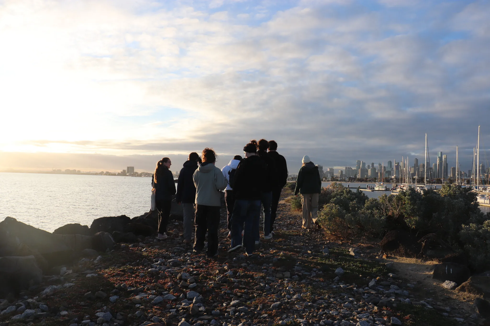
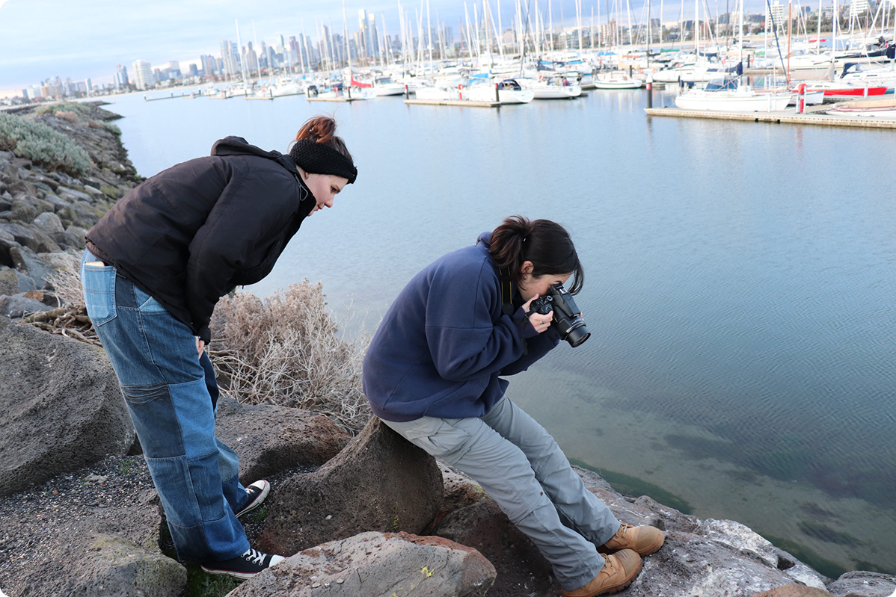
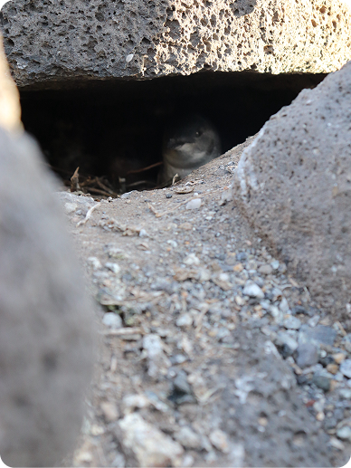
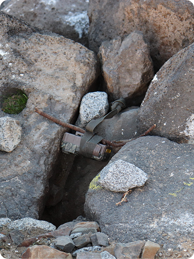
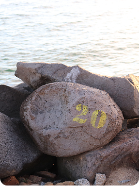

Nillumbik Shire Projectt

The Council
The Nillumbik Shire is home to
one of Victoria’s longest-running forest monitoring
initiatives; an ongoing program that has collected rich ecological data for over
eight years.
This long-term commitment to environmental
observation makes
Nillumbik
a uniquely valuable region for both research and innovation.
Our involvement

The Challenge
Conservation efforts often rely on fragmented, manual data collection, making it difficult to monitor environmental health and spread information effectively across the shire.

Our Solution
We're developing a digital twin platform: an interactive website that integrates data like species sightings, acoustic recordings, trail camera footage, and habitat reports.

Goal
The platform aims to support smarter conservation decisions by offering real-time insights for researchers, councils, and the public, reducing the need for manual processing.
Future Planning
By bridging technology, ecology, and public engagement, this project aspires to deepen community connections with nature and create a scalable model for other regions.